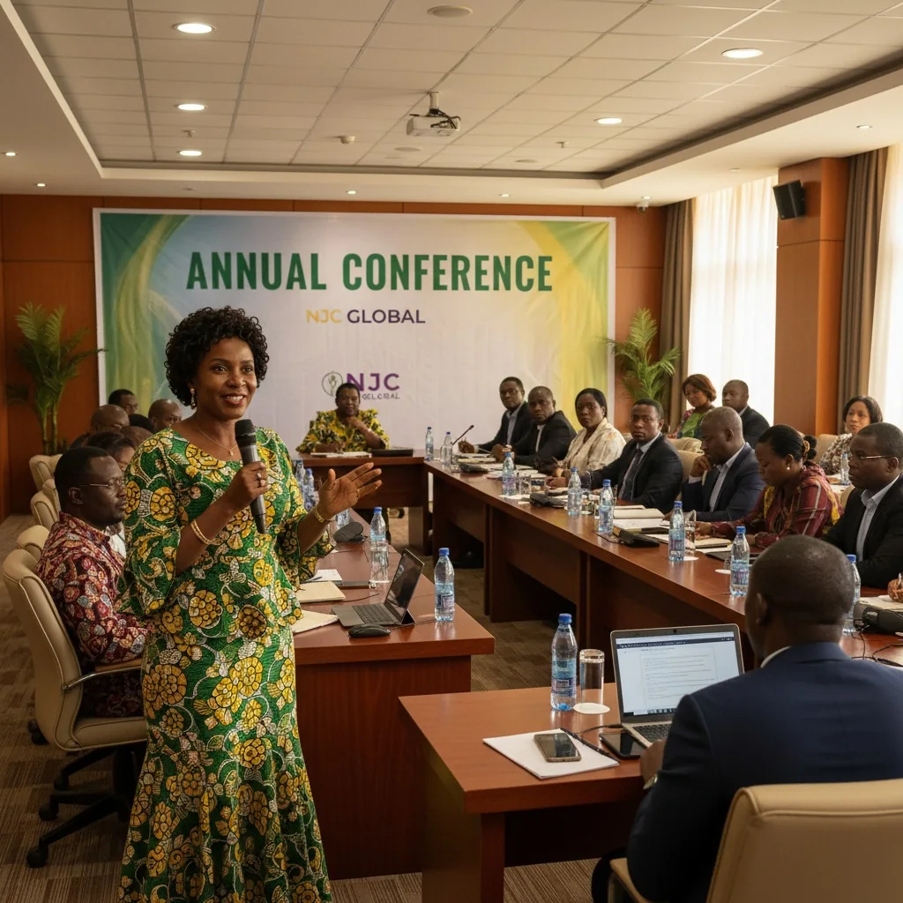

I’ll be honest. For a long time, I thought good work speaks for itself. It doesn’t.
I’ve watched brilliant African professionals, businesses, and events do amazing things and still struggle to get noticed. The work was there. The people who needed to see it just didn’t know it existed. That’s why I started NJC Global. To help the right pan-african events and organization reach their target audience and to also pair them with the right young talents.
So what is NJC Global?
NJC Global is a Pan-African media platform. We help organisations appear correctly online with the right media, fill their events with the right audience, and get the work done by co-organizing. Here’s how.
1. We help you get seen
This is the heart of what we do. We handle your content, your social media, and your storytelling so the right people notice you. That includes interviews and features that tell the story of your leaders properly, and social media that sounds like you, not like a template.
2. We help your event fill the room
An event can be amazing and still end up half empty if nobody knew about it. We plan the communication around your event, work with your speakers, and build buzz before, during, and after. We’ve done this for events like Nzuko Africa 2026, and we know what it takes to get people in the room.
3. We give you a team that gets things done
Behind every project we run is a team of talented people who make sure things go smoothly. Here’s the part many people don’t know: you can also bring that team into your own organisation. If you need extra hands for a campaign, an event, or a project, we can help.
Why work with us?
We care about the story behind the work. Every professional and organisation has something worth sharing, and our job is to help you share it in a way people remember. We keep things simple, we communicate clearly, and we treat your brand like it’s our own.
Let’s build
Africa has so much brilliance, and the world is ready to see it. If you’re building something and want the right people to notice, I’d love to hear about it.
Reach out, send me a message, or subscribe to our newsletter to see what we’re working on. Don’t wait for opportunities to find you. Let’s create them together.